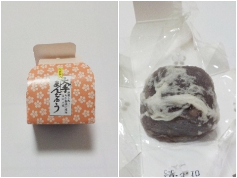

大手饅頭伊部屋の大手まんじゅうはどうしてこんなに美味しいんだろう。
更新日 : 2026/03/06

小さい紙の箱に入ったおまんじゅうって、大量生産のよくあるお土産だろうなって思い味は期待してませんでした。
でも食べたら凄く美味しい。
ほぼ餡子なんですが、餡子が凄く美味しい。キメが細かくてなめらかだし、餡子の味がとってもいい。
岡山に行きたいってちょっと思いました。
岡山県岡山市北区京橋町8-2
更新日 : 2026/03/06

小さい紙の箱に入ったおまんじゅうって、大量生産のよくあるお土産だろうなって思い味は期待してませんでした。
でも食べたら凄く美味しい。
ほぼ餡子なんですが、餡子が凄く美味しい。キメが細かくてなめらかだし、餡子の味がとってもいい。
岡山に行きたいってちょっと思いました。